Resources
Math Textbooks
Textbooks I find insightful and enjoyable to read, from first proofs to motives and mirror symmetry. Books marked ★ Favourite are my personal picks.
- 134Books
- 31Subjects
- 15Favourites
- 100Publisher links
Browse by subject
Foundations
Proofs, sets and the language of mathematics.
Basics of Mathematics4
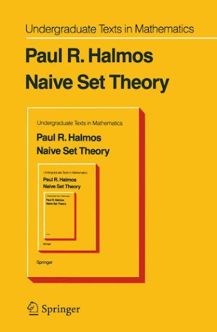
★ FavouriteNaive Set Theory
Paul R. Halmos
Undergraduate Texts in Mathematics
- How to Prove It: A Structured Approach
How to Prove It: A Structured Approach
Daniel J. Velleman
Book of Proof
Richard Hammack
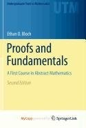
Proofs and Fundamentals
Ethan D. Bloch
Undergraduate Texts in Mathematics
Analysis
From the real numbers to measure theory, operators and PDE.
Real Analysis8
 ★ Favourite
★ FavouritePrinciples of Mathematical Analysis
Walter Rudin
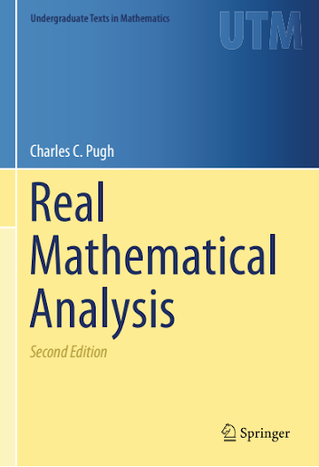
★ FavouriteReal Mathematical Analysis
Charles C. Pugh
Undergraduate Texts in Mathematics
- ★ Favourite
Elementary Analysis: The Theory of Calculus
Kenneth A. Ross
Undergraduate Texts in Mathematics
- ★ Favourite
Analysis I
Terence Tao
Texts and Readings in Mathematics
- ★ Favourite
Analysis II
Terence Tao
Texts and Readings in Mathematics
 ★ Favourite
★ FavouriteThe Big Book of Real Analysis: From Numbers to Measures
Syafiq Johar
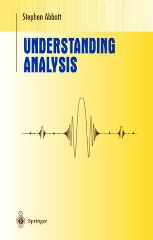
Understanding Analysis
Stephen Abbott
Undergraduate Texts in Mathematics
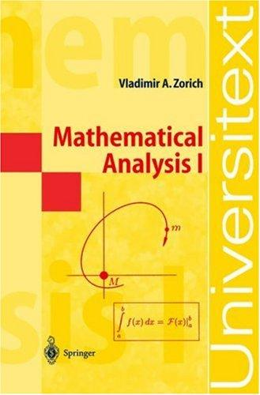
Mathematical Analysis I
Vladimir A. Zorich
Universitext
Measure Theory5
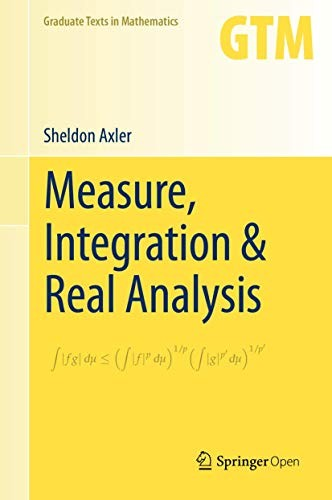
Measure, Integration & Real Analysis
Sheldon Axler
Graduate Texts in Mathematics
- Real Analysis: Measure Theory, Integration, and Hilbert Spaces
Real Analysis: Measure Theory, Integration, and Hilbert Spaces
Elias M. Stein, Rami Shakarchi
- Real Analysis: Modern Techniques and Their Applications
Real Analysis: Modern Techniques and Their Applications
Gerald B. Folland
An Introduction to Measure Theory
Terence Tao
Graduate Studies in Mathematics
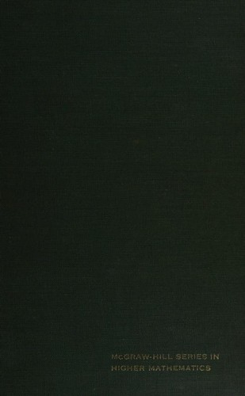
Real and Complex Analysis
Walter Rudin
Complex Analysis4
Complex Analysis
Lars V. Ahlfors
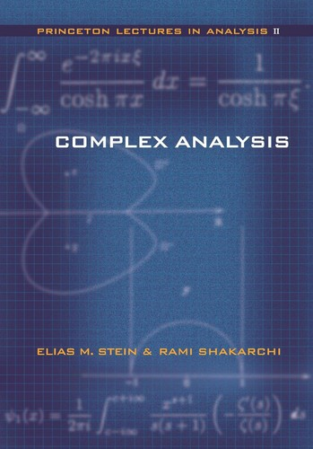
Complex Analysis
Elias M. Stein, Rami Shakarchi
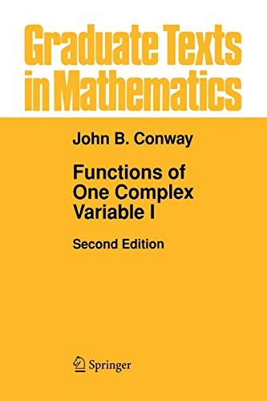
Functions of One Complex Variable I
John B. Conway
Graduate Texts in Mathematics
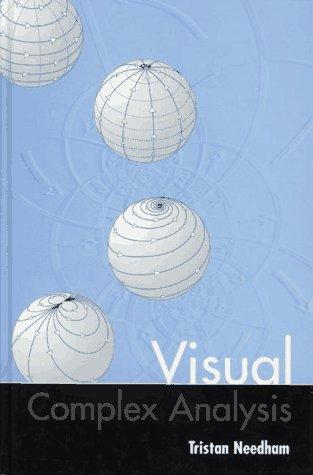
Visual Complex Analysis
Tristan Needham
Functional Analysis4
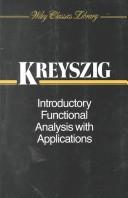
Introductory Functional Analysis with Applications
Erwin Kreyszig
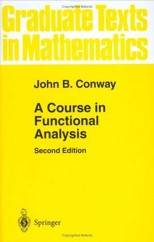
A Course in Functional Analysis
John B. Conway
Graduate Texts in Mathematics
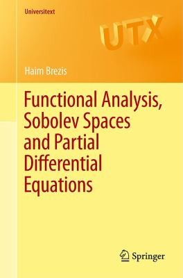
Functional Analysis, Sobolev Spaces and Partial Differential Equations
Haim Brezis
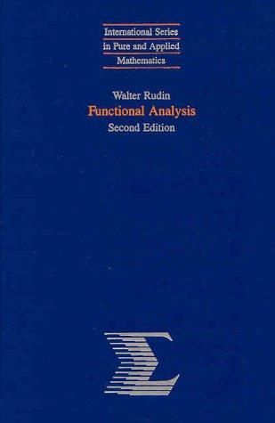
Functional Analysis
Walter Rudin
Fourier Analysis4
- Fourier Analysis: An Introduction
Fourier Analysis: An Introduction
Elias M. Stein, Rami Shakarchi
Fourier Analysis
T. W. Körner
An Introduction to Harmonic Analysis
Yitzhak Katznelson
- Classical Fourier Analysis
Classical Fourier Analysis
Loukas Grafakos
Graduate Texts in Mathematics
Ordinary Differential Equations4
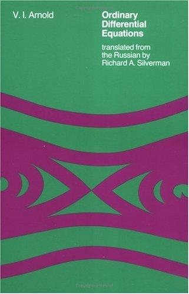
Ordinary Differential Equations
Vladimir I. Arnold
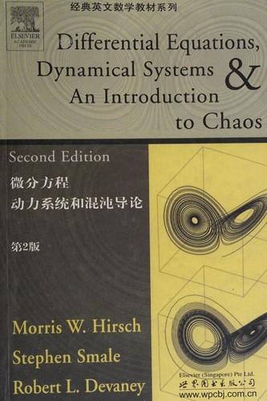
Differential Equations, Dynamical Systems, and an Introduction to Chaos
Morris W. Hirsch, Stephen Smale, Robert L. Devaney
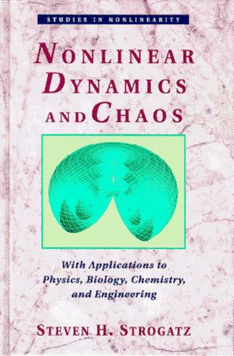
Nonlinear Dynamics and Chaos
Steven H. Strogatz
- Ordinary Differential Equations and Dynamical Systems
Ordinary Differential Equations and Dynamical Systems
Gerald Teschl
Graduate Studies in Mathematics
Partial Differential Equations4
- Partial Differential Equations: An Introduction
Partial Differential Equations: An Introduction
Walter A. Strauss
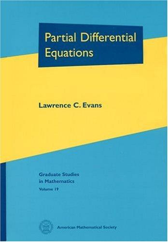
Partial Differential Equations
Lawrence C. Evans
Graduate Studies in Mathematics
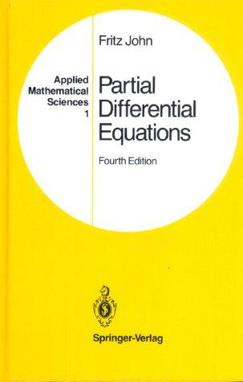
Partial Differential Equations
Fritz John
Applied Mathematical Sciences
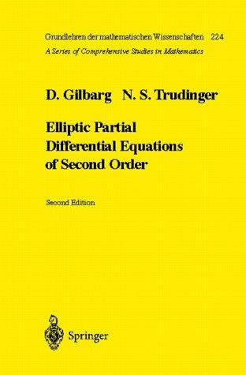
Elliptic Partial Differential Equations of Second Order
David Gilbarg, Neil S. Trudinger
Classics in Mathematics
Fixed Point Theory4
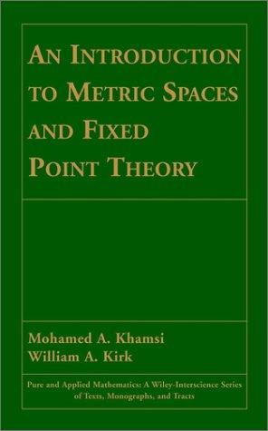
An Introduction to Metric Spaces and Fixed Point Theory
Mohamed A. Khamsi, William A. Kirk
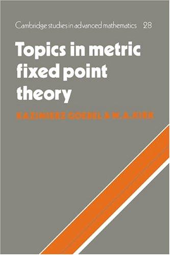
Topics in Metric Fixed Point Theory
Kazimierz Goebel, W. A. Kirk
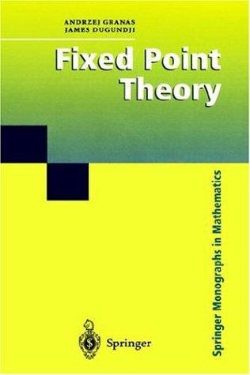
Fixed Point Theory
Andrzej Granas, James Dugundji
Springer Monographs in Mathematics
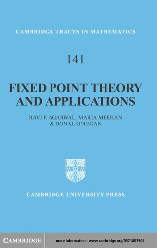
Fixed Point Theory and Applications
Ravi P. Agarwal, Maria Meehan, Donal O'Regan
Algebra
Groups, rings, modules, categories and representations.
Abstract Algebra8
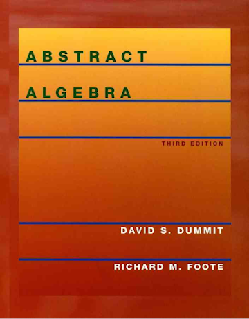
★ FavouriteAbstract Algebra
David S. Dummit, Richard M. Foote
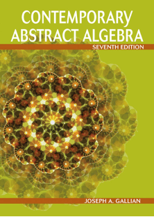
★ FavouriteContemporary Abstract Algebra
Joseph A. Gallian
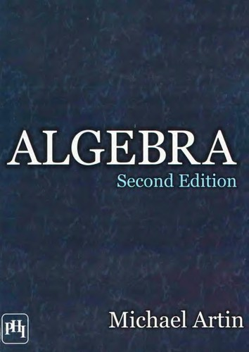
Algebra
Michael Artin
Topics in Algebra
I. N. Herstein
 ★ Favourite
★ FavouriteAlgebra: Chapter 0
Paolo Aluffi
Graduate Studies in Mathematics
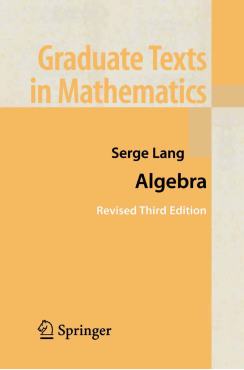
★ FavouriteAlgebra
Serge Lang
Graduate Texts in Mathematics
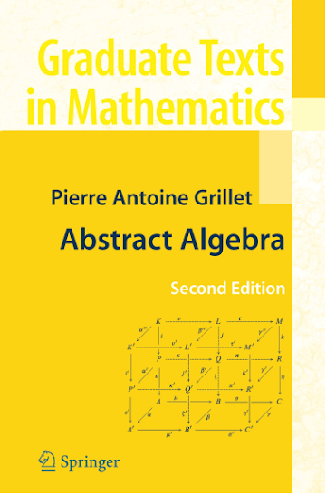
★ FavouriteAbstract Algebra
Pierre Antoine Grillet
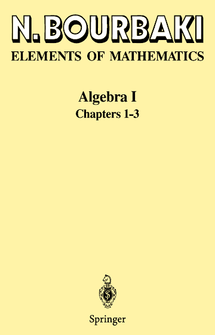
★ FavouriteAlgebra I: Chapters 1–3
Nicolas Bourbaki
Commutative Algebra4
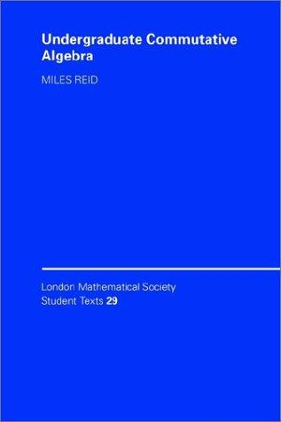
Undergraduate Commutative Algebra
Miles Reid
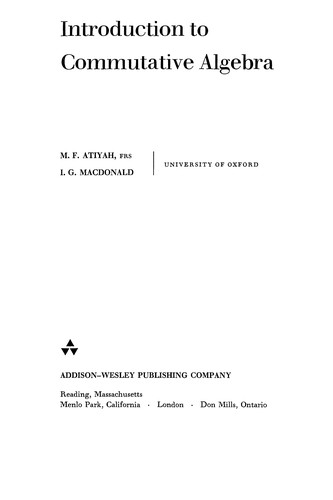
Introduction to Commutative Algebra
M. F. Atiyah, I. G. Macdonald
Commutative Ring Theory
Hideyuki Matsumura
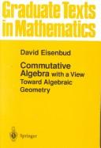
Commutative Algebra with a View Toward Algebraic Geometry
David Eisenbud
Graduate Texts in Mathematics
Homological Algebra4
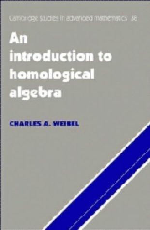
An Introduction to Homological Algebra
Charles A. Weibel
- An Introduction to Homological Algebra
An Introduction to Homological Algebra
Joseph J. Rotman
- A Course in Homological Algebra
A Course in Homological Algebra
P. J. Hilton, U. Stammbach
Graduate Texts in Mathematics
- Methods of Homological Algebra
Methods of Homological Algebra
Sergei I. Gelfand, Yuri I. Manin
Springer Monographs in Mathematics
Lie Algebras4
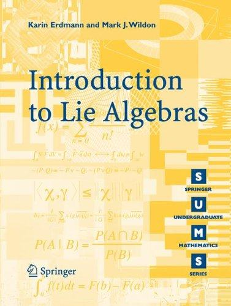
Introduction to Lie Algebras
Karin Erdmann, Mark J. Wildon
Springer Undergraduate Mathematics Series
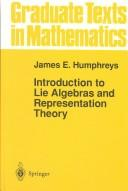
Introduction to Lie Algebras and Representation Theory
James E. Humphreys
Graduate Texts in Mathematics
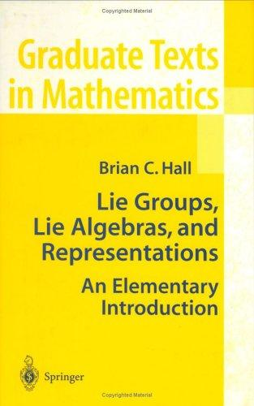
Lie Groups, Lie Algebras, and Representations
Brian C. Hall
Graduate Texts in Mathematics
- Complex Semisimple Lie Algebras
Complex Semisimple Lie Algebras
Jean-Pierre Serre
Springer Monographs in Mathematics
Representation Theory4
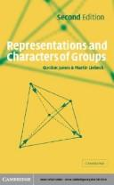
Representations and Characters of Groups
Gordon James, Martin Liebeck
- Linear Representations of Finite Groups
Linear Representations of Finite Groups
Jean-Pierre Serre
Graduate Texts in Mathematics
- Representation Theory: A First Course
Representation Theory: A First Course
William Fulton, Joe Harris
Graduate Texts in Mathematics
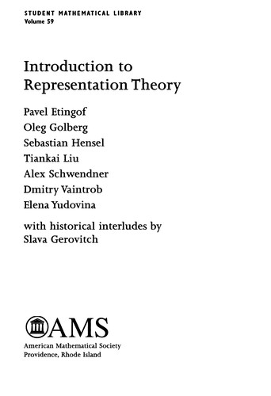
Introduction to Representation Theory
Pavel Etingof et al.
The Student Mathematical Library
Category Theory4
Basic Category Theory
Tom Leinster
- Category Theory in Context
Category Theory in Context
Emily Riehl
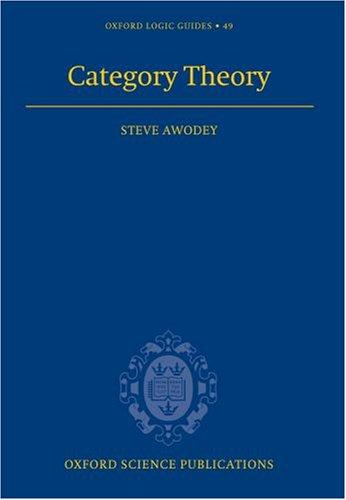
Category Theory
Steve Awodey
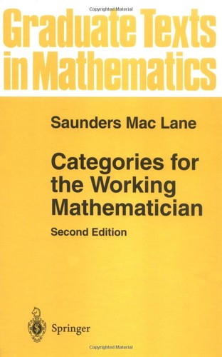
Categories for the Working Mathematician
Saunders Mac Lane
Graduate Texts in Mathematics
∞-Category Theory4
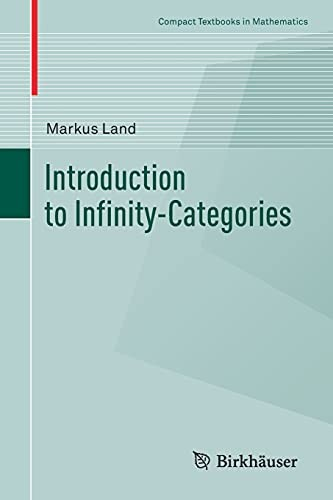
Introduction to Infinity-Categories
Markus Land
Compact Textbooks in Mathematics
- Higher Categories and Homotopical Algebra
Higher Categories and Homotopical Algebra
Denis-Charles Cisinski
- Elements of ∞-Category Theory
Elements of ∞-Category Theory
Emily Riehl, Dominic Verity
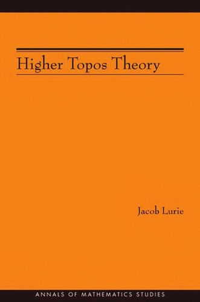
Higher Topos Theory
Jacob Lurie
Annals of Mathematics Studies
Number Theory
From congruences to L-functions and modular forms.
Number Theory6
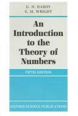
An Introduction to the Theory of Numbers
G. H. Hardy, E. M. Wright
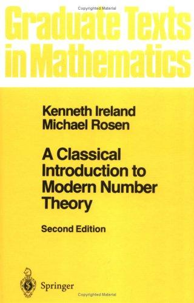
A Classical Introduction to Modern Number Theory
Kenneth Ireland, Michael Rosen
Graduate Texts in Mathematics
- A Course in Arithmetic
A Course in Arithmetic
Jean-Pierre Serre
Graduate Texts in Mathematics
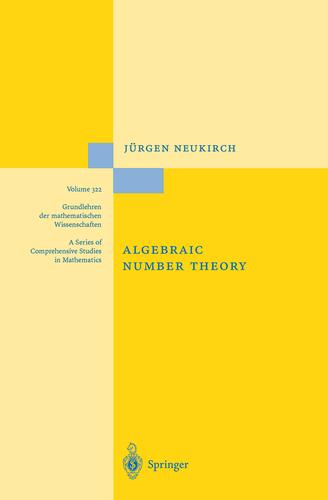
Algebraic Number Theory
Jürgen Neukirch
Grundlehren der mathematischen Wissenschaften
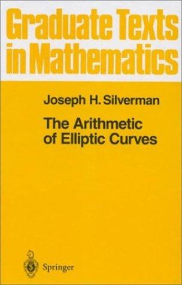
The Arithmetic of Elliptic Curves
Joseph H. Silverman
Graduate Texts in Mathematics
- A First Course in Modular Forms
A First Course in Modular Forms
Fred Diamond, Jerry Shurman
Analytic Number Theory4
Introduction to Analytic Number Theory
Tom M. Apostol
Undergraduate Texts in Mathematics
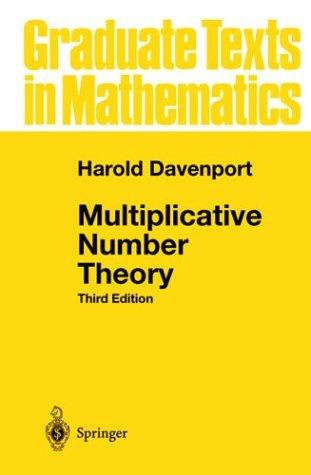
Multiplicative Number Theory
Harold Davenport
Graduate Texts in Mathematics
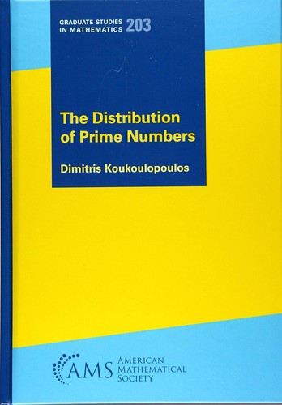
The Distribution of Prime Numbers
Dimitris Koukoulopoulos
Graduate Studies in Mathematics
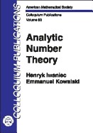
Analytic Number Theory
Henryk Iwaniec, Emmanuel Kowalski
Colloquium Publications
Geometry and Topology
Spaces, manifolds and their invariants.
Topology4

Algebraic Topology4
Homotopy Theory4
- More Concise Algebraic Topology
More Concise Algebraic Topology
J. P. May, K. Ponto
Modern Classical Homotopy Theory
Jeffrey Strom
Graduate Studies in Mathematics
Model Categories
Mark Hovey
Mathematical Surveys and Monographs
Simplicial Homotopy Theory
Paul G. Goerss, John F. Jardine
Differential Geometry5
- Differential Geometry of Curves and Surfaces
Differential Geometry of Curves and Surfaces
Manfredo P. do Carmo
An Introduction to Manifolds
Loring W. Tu
Universitext
Introduction to Smooth Manifolds
John M. Lee
Graduate Texts in Mathematics
Introduction to Riemannian Manifolds
John M. Lee
Graduate Texts in Mathematics
Riemannian Geometry
Manfredo P. do Carmo
Morse Theory4
- Morse Theory
Morse Theory
John Milnor
Annals of Mathematics Studies
- An Introduction to Morse Theory
An Introduction to Morse Theory
Yukio Matsumoto
Translations of Mathematical Monographs
An Invitation to Morse Theory
Liviu Nicolaescu
Universitext
Lectures on Morse Homology
Augustin Banyaga, David Hurtubise
Kluwer Texts in the Mathematical Sciences
Complex Geometry4
Euclidean Geometry4
Geometry Revisited
H. S. M. Coxeter, S. L. Greitzer
Anneli Lax New Mathematical Library
Introduction to Geometry
H. S. M. Coxeter
- Geometry: Euclid and Beyond
Geometry: Euclid and Beyond
Robin Hartshorne
Undergraduate Texts in Mathematics
- The Four Pillars of Geometry
The Four Pillars of Geometry
John Stillwell
Undergraduate Texts in Mathematics
Non-Euclidean Geometry4
- Euclidean and Non-Euclidean Geometries
Euclidean and Non-Euclidean Geometries
Marvin Jay Greenberg
Hyperbolic Geometry
James W. Anderson
Springer Undergraduate Mathematics Series
Geometry of Surfaces
John Stillwell
Universitext
Foundations of Hyperbolic Manifolds
John G. Ratcliffe
Graduate Texts in Mathematics
Algebraic Geometry
Varieties, schemes, motives and mirror symmetry.
Algebraic and Arithmetic Geometry5
- Algebraic Curves
Algebraic Curves
William Fulton
Basic Algebraic Geometry 1
Igor R. Shafarevich
- ★ Favourite
Algebraic Geometry
Robin Hartshorne
Graduate Texts in Mathematics
- Algebraic Geometry I: Schemes
Algebraic Geometry I: Schemes
Ulrich Görtz, Torsten Wedhorn
Springer Studium Mathematik - Master
Algebraic Geometry and Arithmetic Curves
Qing Liu
Derived Algebraic Geometry2
- A Study in Derived Algebraic Geometry, Vol. I
A Study in Derived Algebraic Geometry, Vol. I
Dennis Gaitsgory, Nick Rozenblyum
Mathematical Surveys and Monographs
- Homotopical Algebraic Geometry II: Geometric Stacks and Applications
Homotopical Algebraic Geometry II: Geometric Stacks and Applications
Bertrand Toën, Gabriele Vezzosi
Motivic Cohomology3
Homological Mirror Symmetry4
Mirror Symmetry
Kentaro Hori et al.
Mirror Symmetry and Algebraic Geometry
David A. Cox, Sheldon Katz
Mathematical Surveys and Monographs
- Dirichlet Branes and Mirror Symmetry
Dirichlet Branes and Mirror Symmetry
Paul S. Aspinwall et al.
- Fukaya Categories and Picard-Lefschetz Theory
Fukaya Categories and Picard-Lefschetz Theory
Paul Seidel
Zurich Lectures in Advanced Mathematics
Discrete Mathematics
Graphs and combinatorial structures.
Graph Theory4
- Introduction to Graph Theory
Introduction to Graph Theory
Douglas B. West
Graph Theory
Reinhard Diestel
Graduate Texts in Mathematics
- Graph Theory
Graph Theory
J. A. Bondy, U. S. R. Murty
Graduate Texts in Mathematics
Modern Graph Theory
Béla Bollobás
Covers from Open Library where available; publisher links use each book’s DOI (via Crossref) and may point to a different edition. Checked on 20 November 2026.
For a full study plan with video courses, see the Mathematics Roadmap.